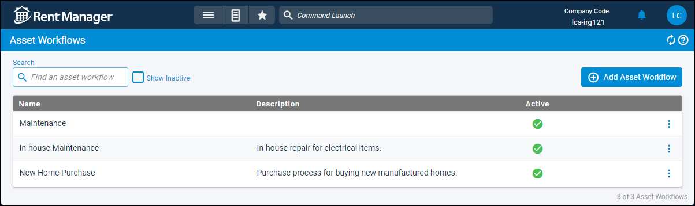

Source: https://rmxhelp.rentmanager.com/Topics/Express/CSH/Asset-Workflows.htm
Asset Workflows (Page)
Asset workflows allow you to define procedures, such as purchasing, maintenance, or sales, and track the progress of assets using asset statuses. For example, if an asset is in maintenance, you can start with a Vendor Contacted status. Then, the workflow can take the asset through the statuses of Asset Shipped, Asset Received By Vendor, Vendor Shipped Back, and so on as the process takes place.
Rent Manager is flexible with the in-between statuses of the asset. For example, if the asset wasn't acceptable when your business received it after maintenance, you can move it back to the status of Asset Shipped to start the process over again.
With workflows, any user with the appropriate privileges can update the status of the asset. In the previous example, your office staff may receive the communication that the vendor received the asset for service, but your maintenance staff would know when the asset is placed back in use. Any of these users can move the asset through the workflow, which communicates to everyone the state of the asset.
Related Privileges
| Group | Privilege | Column |
|---|---|---|
| Asset Management | Manage Asset Workflows | Enabled |
For more information, refer to Control User Access.
To open the Asset Workflows page, go to  arrow_forward Rental Info arrow_forward
arrow_forward Rental Info arrow_forward  Rental Info Setup arrow_forward Assets arrow_forward Asset Workflow.
Rental Info Setup arrow_forward Assets arrow_forward Asset Workflow.

Column Descriptions
The following columns are available on this page.
| Column | Description |
|---|---|
|
Name |
The unique name of this asset workflow. |
|
Description |
An optional note that provides additional information about when to use this workflow. |
|
Active |
A |